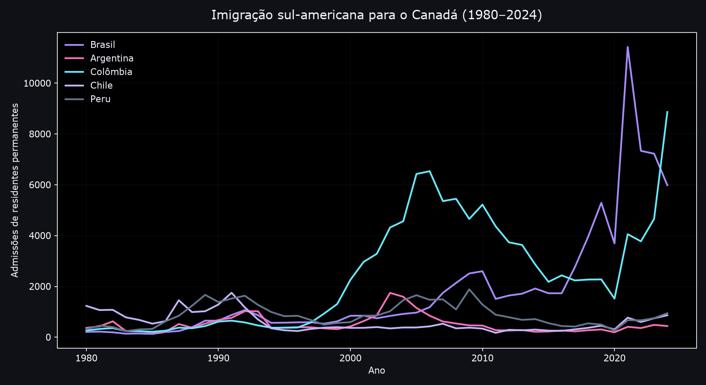
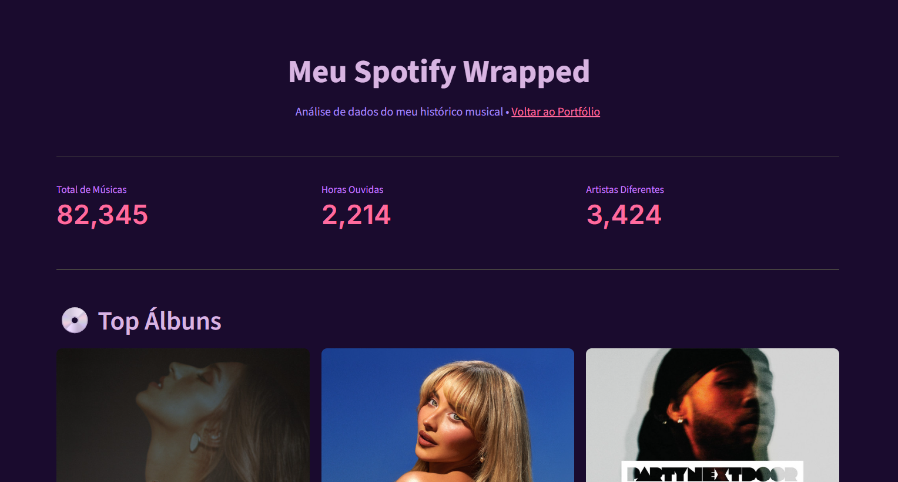
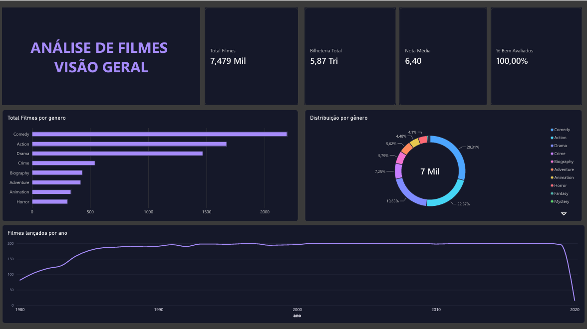
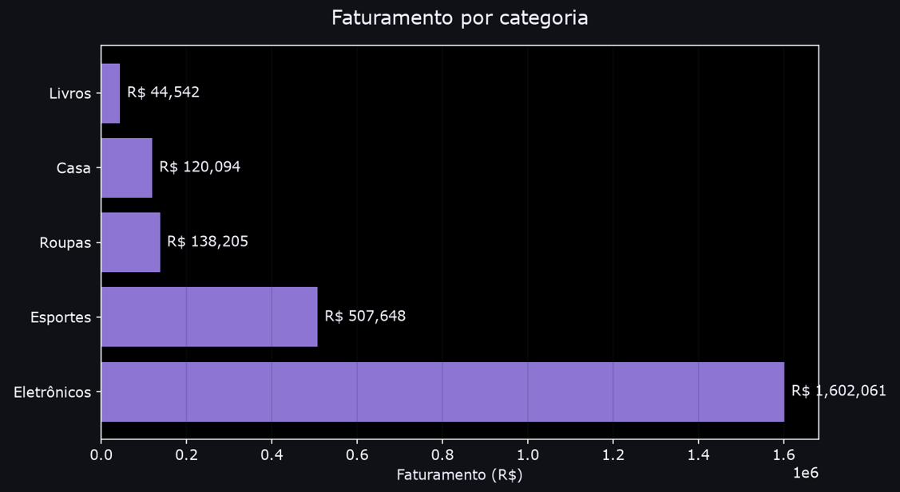

Brasileiros no Canadá (1980–2024)
Análise histórica da imigração brasileira para o Canadá com dados oficiais do IRCC. Compara o Brasil com outros países sul-americanos e identifica picos migratórios.
Ver no GitHub ↗Estudante de Ciência da Computação apaixonada por análise de dados, tecnologia e visualização de informações. Explorando dados para encontrar padrões, responder perguntas e transformar números em conhecimento.


Análise histórica da imigração brasileira para o Canadá com dados oficiais do IRCC. Compara o Brasil com outros países sul-americanos e identifica picos migratórios.
Ver no GitHub ↗
Análise profunda dos hábitos musicais usando Python. Inclui ranking de artistas, horários de pico, evolução mensal e detecção de músicas repetidas.
Ver no GitHub ↗
Dashboard interativo no Power BI com análise de bilheteria, avaliações e tendências do cinema. Inclui KPIs, análise por gênero e evolução temporal.
Ver no GitHub ↗
Análise de vendas com SQL (SQLite): faturamento por categoria, top clientes, ticket médio por estado e evolução mensal. Consultas com JOIN, GROUP BY, CTEs e window functions.
Ver no GitHub ↗Sou estudante de Ciência da Computação com foco em Análise de Dados e Business Intelligence. Desenvolvo projetos práticos de extração, tratamento e visualização de dados, utilizando Python (Pandas, Matplotlib), SQL e Power BI para transformar dados brutos em insights de negócio.
Vamos conversar sobre tecnologia, dados e oportunidades?